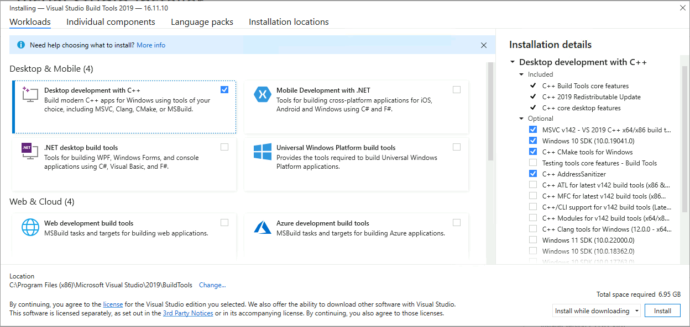

Installation¶
This page explains how to prepare your environment for running the bot.
The freqtrade documentation describes various ways to install freqtrade
- Docker images (separate page)
- Script Installation
- Manual Installation
- Installation with Conda
Please consider using the prebuilt docker images to get started quickly.
Updating
Keeping freqtrade updated is important to ensure ongoing compatibility with exchange API's. Please refer to the updating guide for details on how to update your installation.
Windows users
We strongly recommend that Windows users use Docker as this will work much easier and smoother (also more secure).
If that is not possible, try using the Windows Linux subsystem (WSL) - for which the Ubuntu/Linux instructions will work.
If you really want to install freqtrade natively on Windows, best use the ./setup.ps1 installation script.
Please also make sure to use the 64bit version of Python, as 32bit versions have severe memory limitations, which can negatively impact your experience with backtesting/hyperopt.
Information¶
The easiest way to install and run Freqtrade is to clone the bot Github repository and then run the ./setup.sh (./setup.ps1 for Windows) script, if it's available for your platform.
Version considerations
When cloning the repository the default working branch has the name develop. This branch contains all last features (can be considered as relatively stable, thanks to automated tests).
The stable branch contains the code of the last release (done usually once per month on an approximately one week old snapshot of the develop branch to prevent packaging bugs, so potentially it's more stable).
Note
Either uv, or Python3.11 or higher and the corresponding pip are assumed to be available. The install-script will warn you and stop if that's not the case. git is also needed to clone the Freqtrade repository.
Also, python headers (python<yourversion>-dev / python<yourversion>-devel) must be available for the installation to complete successfully.
Up-to-date clock
The clock on the system running the bot must be accurate, synchronized to a NTP server frequently enough to avoid problems with communication to the exchanges.
Requirements¶
These requirements apply to both Script Installation and Manual Installation.
ARM64 systems
If you are running an ARM64 system (like a MacOS M1 or an Oracle VM), please use docker to run freqtrade. While native installation is possible with some manual effort, this is not supported at the moment.
Install guide¶
- Python >= 3.11
- pip
- git
- virtualenv (Recommended)
Install code¶
We've included/collected install instructions for Ubuntu, MacOS, and Windows. These are guidelines and your success may vary with other distros. OS Specific steps are listed first, the common section below is necessary for all systems.
Note
Python3.11 or higher and the corresponding pip are assumed to be available.
Install necessary dependencies¶
# update repository
sudo apt-get update
# install packages
sudo apt install -y python3-pip python3-venv python3-dev python3-pandas git curl
Install necessary dependencies¶
Install Homebrew if you don't have it already.
# install packages
brew install gettext libomp
Note
The setup.sh script will install these dependencies for you - assuming brew is installed on your system.
The following assumes the latest Raspbian Buster lite image. This image comes with python3.11 preinstalled, making it easy to get freqtrade up and running.
Tested using a Raspberry Pi 3 with the Raspbian Buster lite image, all updates applied.
sudo apt-get install python3-venv libatlas-base-dev cmake curl libffi-dev
# Use piwheels.org to speed up installation
sudo echo "[global]\nextra-index-url=https://www.piwheels.org/simple" > tee /etc/pip.conf
git clone https://github.com/freqtrade/freqtrade.git
cd freqtrade
bash setup.sh -i
Installation duration
Depending on your internet speed and the Raspberry Pi version, installation can take multiple hours to complete. Due to this, we recommend to use the pre-build docker-image for Raspberry, by following the Docker quickstart documentation
Note
The above does not install hyperopt dependencies. To install these, please use python3 -m pip install -e .[hyperopt].
We do not advise to run hyperopt on a Raspberry Pi, since this is a very resource-heavy operation, which should be done on powerful machine.
Freqtrade repository¶
Freqtrade is an open source crypto-currency trading bot, whose code is hosted on github.com
# Download `develop` branch of freqtrade repository
git clone https://github.com/freqtrade/freqtrade.git
# Enter downloaded directory
cd freqtrade
# your choice (1): novice user
git checkout stable
# your choice (2): advanced user
git checkout develop
(1) This command switches the cloned repository to the use of the stable branch. It's not needed, if you wish to stay on the (2) develop branch.
You may later switch between branches at any time with the git checkout stable/git checkout develop commands.
Install from pypi
An alternative way to install Freqtrade is from pypi. The downside is that this method requires ta-lib to be correctly installed beforehand, and is therefore currently not the recommended way to install Freqtrade.
pip install freqtrade
Script Installation¶
First of the ways to install Freqtrade, is to use provided the Linux/MacOS ./setup.sh script, which install all dependencies and help you configure the bot.
Make sure you fulfill the Requirements and have downloaded the Freqtrade repository.
Use /setup.sh -install (Linux/MacOS)¶
If you are on Debian, Ubuntu or MacOS, freqtrade provides the script to install freqtrade.
# --install, Install freqtrade from scratch
./setup.sh -i
Other options of /setup.sh script¶
You can also update, configure and reset the codebase of your bot with ./setup.sh
# --update, Command git pull to update.
./setup.sh -u
# --reset, Hard reset your develop/stable branch.
./setup.sh -r
** --install **
With this option, the script will install the bot and most dependencies:
You will need to have git and python3.11+ installed beforehand for this to work.
* Mandatory software as: `ta-lib`
* Setup your virtualenv under `.venv/`
This option is a combination of installation tasks and `--reset`
** --update **
This option will pull the last version of your current branch and update your virtualenv. Run the script with this option periodically to update your bot.
** --reset **
This option will hard reset your branch (only if you are on either `stable` or `develop`) and recreate your virtualenv.
Activate your virtual environment¶
Each time you open a new terminal, you must run source .venv/bin/activate to activate your virtual environment.
# activate virtual environment
source ./.venv/bin/activate
Use ./setup.ps1 (Windows)¶
The script will ask you a few questions to determine which parts should be installed.
Set-ExecutionPolicy -ExecutionPolicy Bypass
cd freqtrade
. .\setup.ps1
Activate your virtual environment (Windows)¶
# activate virtual environment
. .\.venv\Scripts\Activate.ps1
You are now ready to run the bot.
Manual Installation¶
Make sure you fulfill the Requirements and have downloaded the Freqtrade repository.
Setup Python virtual environment (virtualenv)¶
You will run freqtrade in separated virtual environment
# create virtualenv in directory /freqtrade/.venv
python3 -m venv .venv
# run virtualenv
source .venv/bin/activate
Install python dependencies¶
python3 -m pip install --upgrade pip
python3 -m pip install -r requirements.txt
# install freqtrade
python3 -m pip install -e .
You are now ready to run the bot.
(Optional) Post-installation Tasks¶
Note
If you run the bot on a server, you should consider using Docker or a terminal multiplexer like screen or tmux to avoid that the bot is stopped on logout.
On Linux with software suite systemd, as an optional post-installation task, you may wish to setup the bot to run as a systemd service or configure it to send the log messages to the syslog/rsyslog or journald daemons. See Advanced Logging for details.
Installation with Conda¶
Freqtrade can also be installed with Miniconda or Anaconda. We recommend using Miniconda as it's installation footprint is smaller. Conda will automatically prepare and manage the extensive library-dependencies of the Freqtrade program.
What is Conda?¶
Conda is a package, dependency and environment manager for multiple programming languages: conda docs
Installation with conda¶
Install Conda¶
Answer all questions. After installation, it is mandatory to turn your terminal OFF and ON again.
Freqtrade download¶
Download and install freqtrade.
# download freqtrade
git clone https://github.com/freqtrade/freqtrade.git
# enter downloaded directory 'freqtrade'
cd freqtrade
Freqtrade install: Conda Environment¶
conda create --name freqtrade python=3.12
Creating Conda Environment
The conda command create -n automatically installs all nested dependencies for the selected libraries, general structure of installation command is:
# choose your own packages
conda env create -n [name of the environment] [python version] [packages]
Enter/exit freqtrade environment¶
To check available environments, type
conda env list
Enter installed environment
# enter conda environment
conda activate freqtrade
# exit conda environment - don't do it now
conda deactivate
Install last python dependencies with pip
python3 -m pip install --upgrade pip
python3 -m pip install -r requirements.txt
python3 -m pip install -e .
You are now ready to run the bot.
Important shortcuts¶
# list installed conda environments
conda env list
# activate base environment
conda activate
# activate freqtrade environment
conda activate freqtrade
#deactivate any conda environments
conda deactivate
Further info on anaconda¶
New heavy packages
It may happen that creating a new Conda environment, populated with selected packages at the moment of creation takes less time than installing a large, heavy library or application, into previously set environment.
pip install within conda
The documentation of conda says that pip should NOT be used within conda, because internal problems can occur. However, they are rare. Anaconda Blogpost
Nevertheless, that is why, the conda-forge channel is preferred:
- more libraries are available (less need for
pip) conda-forgeworks better withpip- the libraries are newer
Happy trading!
You are ready¶
You've made it this far, so you have successfully installed freqtrade.
Initialize the configuration¶
# Step 1 - Initialize user folder
freqtrade create-userdir --userdir user_data
# Step 2 - Create a new configuration file
freqtrade new-config --config user_data/config.json
You are ready to run, read Bot Configuration, remember to start with dry_run: True and verify that everything is working.
To learn how to setup your configuration, please refer to the Bot Configuration documentation page.
Start the Bot¶
freqtrade trade --config user_data/config.json --strategy SampleStrategy
Warning
You should read through the rest of the documentation, backtest the strategy you're going to use, and use dry-run before enabling trading with real money.
Troubleshooting¶
Common problem: "command not found"¶
If you used (1)Script or (2)Manual installation, you need to run the bot in virtual environment. If you get error as below, make sure venv is active.
# if:
bash: freqtrade: command not found
# then activate your virtual environment
source ./.venv/bin/activate
MacOS installation error¶
Newer versions of MacOS may have installation failed with errors like error: command 'g++' failed with exit status 1.
This error will require explicit installation of the SDK Headers, which are not installed by default in this version of MacOS. For MacOS 10.14, this can be accomplished with the below command.
open /Library/Developer/CommandLineTools/Packages/macOS_SDK_headers_for_macOS_10.14.pkg
If this file is inexistent, then you're probably on a different version of MacOS, so you may need to consult the internet for specific resolution details.
Windows Installation error¶
error: Microsoft Visual C++ 14.0 is required. Get it with "Microsoft Visual C++ Build Tools": http://landinghub.visualstudio.com/visual-cpp-build-tools
Unfortunately, many packages requiring compilation don't provide a pre-built wheel. It is therefore mandatory to have a C/C++ compiler installed and available for your python environment to use.
You can download the Visual C++ build tools from the Visual Studio website and install "Desktop development with C++" in it's default configuration. Unfortunately, this is a heavy download / dependency so you might want to consider WSL2 or docker compose first.
